Intellisense can be a boon to adding quick development. Quick hints on scope specific variables, syntax suggestions, function descriptions and more provide a valuable tool to productive coding.Coding in SQL Server Management Studio (SSMS) has greatly improved over the version releases, but it still lags behind the power of Visual Studio's intellisense, template insertions with "fill in the blank" functionality .
Additionally, the lack of automatic indentation means that lining up sub-queries and levels of logic can be annoyingly time consuming... especially when not everyone on a team following the exact same coding standards. Legibility can easily suffer. Intellisense fails to properly update at times and reads pending statements as errors in syntax disabling the prompts from providing help. Automatic SQL formatting has been a long missed feature in SSMS. Trying to line up levels of nested queries can be very time consuming, and variances in the way people layout the query can effect readability.
As a developer, I'm constantly looking for ways to improve my coding experience and streamline repetitive bits of coding. One such tool is SSMSBoost which provides many valuable shortcuts and features that SSMS omitted. The SSMSBoost team provides a free community edition to their fellow developers and responds to feedback promptly. I'd highly recommend checking them out.
However, SSMS Intellisense improvement is by far the most powerful and productive coding tool that developers can look to improve. This tool enables quick hints to job the foggy mind missing that all important cup of espresso in the morning!
In my search for coding tools I've reviewed three main contenders in the arena: ApexSQL Complete, Red Gate SQL Prompt, and DbForge SQL Complete. For me, the best tool ended up being DbForge SQL Complete. The product fills in the gap on intellisense improvements. I've installed in SSMS 2012, which is an improved environment and developers can use while still working with SQL Server 2008R2.
ApexSQL Complete was offered free to the community with some powerful formatting capabilities. However, I was never able to get the formatting to truly match the clean results of Red Gate SQL Prompt and DbForge SQL Complete. Additionally, ApexSQL Complete had some lag issues originally which seem to have been improved in recent releases, but still seemed to get in the way more than the other tools. Their object info prompts were rudimentary and not formatted well.
Red Gate SQL Prompt is a fine product, and rates highly. However, the customization offered in the formatting profiles was very limited and seemed focused on simplicity rather than offering complete control. It also seemed to have some unpolished edges, such as typing INSERT INTO TABLE, would provide the template of columns and value upon accepting the intellisense prompt, but the insertion didn't follow the same formatting standards you had setup, and thus was harder to work with. It also was an expensive option compared to the others, with a Professional license running over $300+ for just a year of upgrades and support. DbForge SQL Complete offered the best solution for my needs. The amount of customization offered was incredible and the end result was a powerful formatting tool with amazing results, and a intellisense tool that truly improved my coding experience (enough that I wanted to share with others this tool!) This tool is also compatible with Visual Studio, so now those doing SQL work in Visual studio will have a great tool to help fill the deficiencies of VS for SQL development.
Before reviewing the tool, I'd also mention that DBForge offers a user vote/forum with which I've had feedback on almost every single issue right away. Their communication seems top notch, in additional to providing special programs and discounts for their products. One bug I found in the formatting was addressed with a new update within 2 weeks. That's a responsive company!
This review is performed on the full version. An express version is also offered to the community as a service. This tool has a portion of the full version's functionality to whet the eager developer's appetite. A free trial is offered on the full version... but beware you won't be able to be satisfied with native SSMS features after this!
Improvements to the SSMS Coding environment are shown. A shortcut to refresh the cache of intellisense, formatting options, a command to execute the currently selected statement, outline the structure of the document, snippet management, and feedback. I'll review only the portions that seem to have the greatest impact, as most of it is self explanatory.
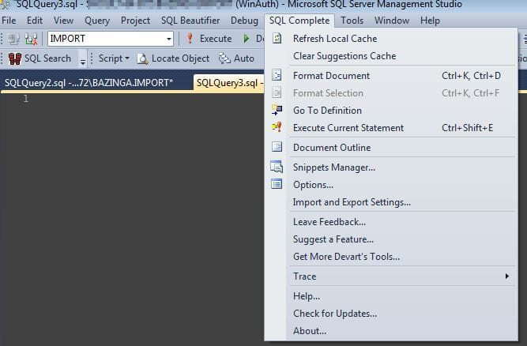
Of particular note is the "automatically trigger after" option. For users that want intellisense to help out only after a long pause and not constantly change while typing, this option is helpful. Setting a longer time on the ms will keep the box from showing up unless a command is pressed to initiate the intellisense showing up (Default: Control-Space).
The highlight occurrences option is a great feature added by Devart. When a particular object is selected in the query editor window, other occurrences are highlighted for easy viewing.
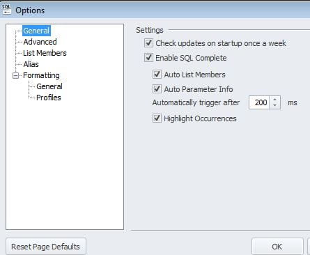
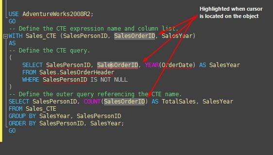
Automatic alias generation is another boon to the developer. SQL Complete is will automatically generate an alias for you upon object selection from intellisense. This also means that column selections later on will be correctly assign the alias, reducing typing.
select * from company c -- this alias was auto generated when selected
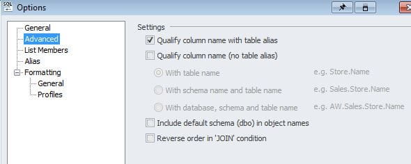
Alias generation is powerful, but overshadowed by one of the simplest yet much needed features that SSMS Native Intellisense lacks: column selection and wild card expansion.
Dragging the column names from object explorer results in a list of columns delimited by commas, but not stacked vertically, it also doesn't handle multiple table columns being dragged at the same time, or a "limited selection of columns."
SQL Complete fills this gap. Pressing tab allows expansion of columns in a stacked list, with alias's already assigned correctly. The column select appends to the same line, but with the automatic formatting tool, the finished list is easily stacked vertically with the press of the format shortcut. These are simple examples, but I've found to extremely helpful when working with complex queries involving numerous tables. Expanding all the columns available or selecting, with correct alias generation is a major improvement to the SSMS development environment
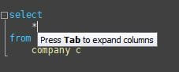
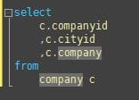
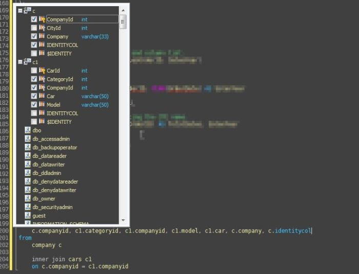
Insert statements are "auto completed" helping provide quick statement generation, this is a lifesaver!
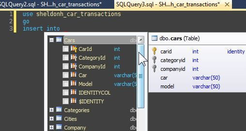
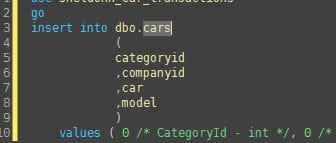
Prompts also help developers know the table structure of objects/views, stored procedure parameters, and function usage. Might save some folks MSDN googling just to remind themselves about the correct function usage!
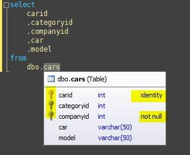
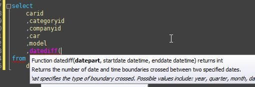
Compare this to the native function prompt:
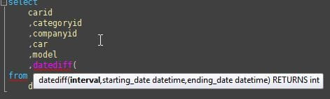
<enter mind blown event> Snippet tools are helpful for saving some typing, but until now they've been typically limited to just pasting in text. The full functioned snippet functionality of Visual Studio with field selection by navigating with tab hasn't existed in SSMS.... till now.
Snippets are brought to us with SQL Complete with an amazing thought to detail. Not only are the snippets brought into our editor window, but are also displayed in intellisense, with"fields" provided to navigate to to "fill in the blanks." Variables for customization are offered and the sky is the limit here!
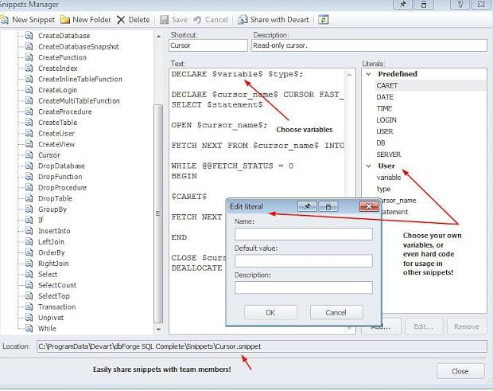
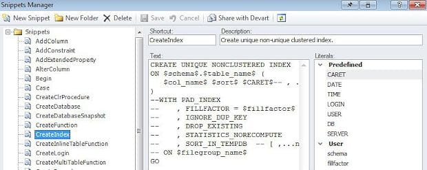
Below I demonstrate a cursor snippet. The only keystrokes I used to complete this action were:
cu + Tab @MyCustom + Tab + custom_name_i_entered_in_one_place
Total Keystrokes = 48 (10.9% Cost ) Total keystrokes without addin (and no mistakes) = 440 (89.1% cost) Would you keep an execution plan version that was 89% higher cost... 392 keystrokes later?
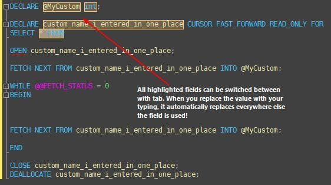
Formatting SQL code manually can be a pain. There are online tools offered with some limited functionality, but who really wants to use a web based formatting tool with production code? Addins for SSMS formatting are limited in number. Parsing the logical construct of a SQL statement isn't quite a simple as indenting a foreach loop in C#. SQL Complete offers one of the best SSMS SQL formatters I've come across.
The level of customization is intense. A few screenshots are provided, but I will not go into all the levels of customization, instead I'll provide you with some MSDN code samples that SQL Complete beautified. Running the format can be done on a selection or an entire document. Settings can be saved so a team could easily share a formatting standard. This would prevent each person from having to configure all their settings manually, a major plus in setup for any team!
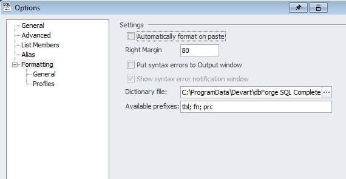
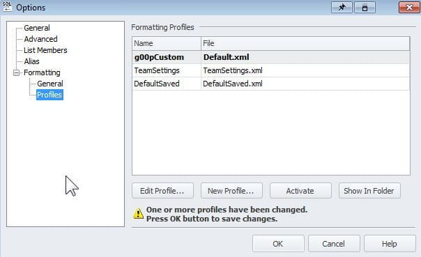
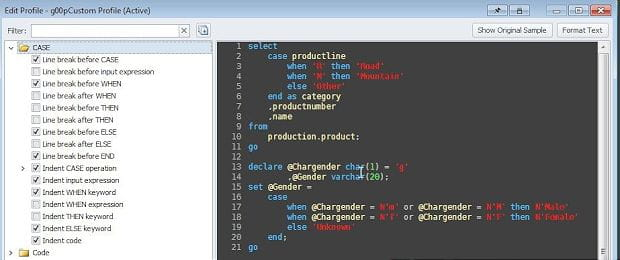
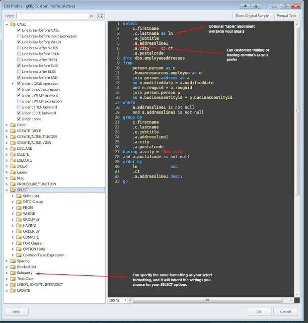
Here are some examples of the formatting tool at work in order from a simple query to a complex recursive CTE. I believe this tool handles it beautifully!
BEFORE
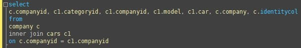
AFTER
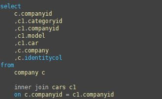
BEFORE
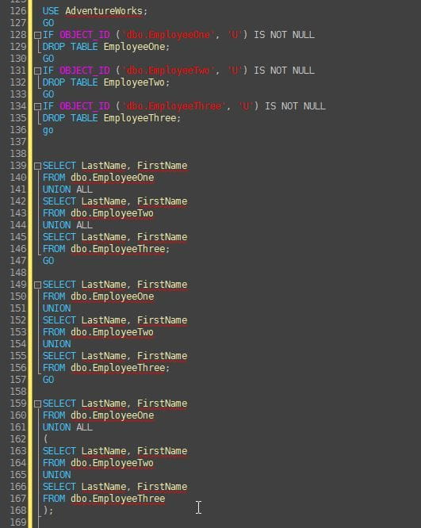
After: *line breaks handled with union's
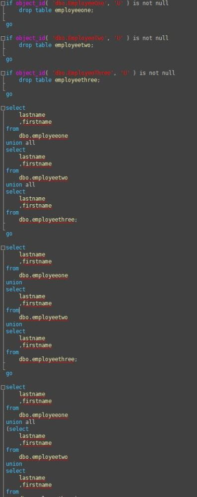
BEFORE: Complex CTE
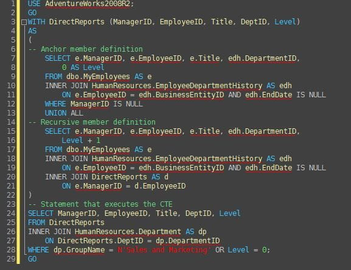
AFTER
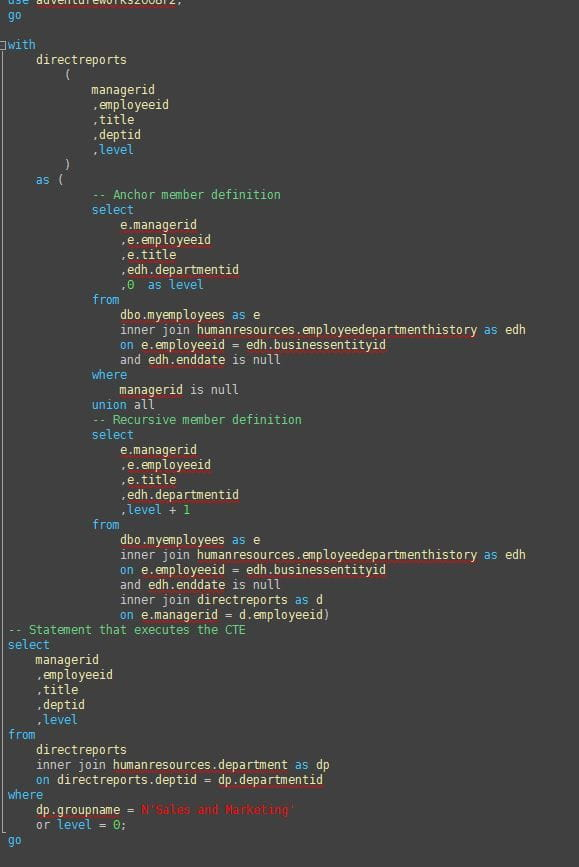
Additional features are available, such as automatically finding object in object explorer when selected in query window, outlining of document, contextually based join statements, and more. I covered only the features I considered the highest impact on my workflow. Finding a tool to enhance the development process in SSMS should be something SQL developer's consider.
Once you utilize a tool like this, you'll find that the improvements help you focus on the more important things. Spending time thinking about "lining" up code is a waste of time when a developer could be focused on the content. Formatting all code to be lined up the same with a press of your shortcut keys also helps you not focus on trying to discern the formatting standards of others, and instead get down to the important work! The continual improvements and responsiveness of Devart to feedback and resolving issues I had makes me give their product a two thumbs up award!
I do not work for Devart or any competing product. I reviewed this program since I've been sold on the value of it, and wanted to participate in their High Five program which helps developers that like their products share with others, and be eligible for discount/reward if a review of their product is completed. I believe the tool to be useful, and has improved my experience with SSMS. I hope other SQL developers can benefit, especially those who were unaware of the availability of such a great addin.